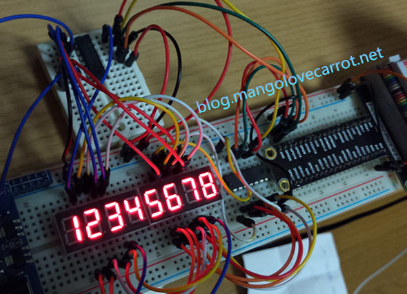

树莓派GPIO入门08-使用74HC595芯片驱动数码管（二）
上一篇我们学习了如何利用74HC595这块显示驱动芯片来驱动1位8段数码管的方法。并逐一讲解了该芯片各引脚的功能。细心的童鞋可能注意到了，上次我们有一个Q7S引脚没有用到。这一篇我们就用这个引脚来级联两块74HC595芯片同时驱动8个8段数码管。在两块74HC595芯片的配合下，同样只需要3个GPIO口就能驱动八只8段数码管。而如果直接用GPIO驱动则需要至少16个GPIO口，节省了13个GPIO！而且按照本文的方法，你还可以级联更多的74HC595芯片，每多级联一片就能多驱动8只数码管，而需要的IO口仍然只有3个！妈妈再也不用担心我的IO口不够用了。
最终效果
视频演示
硬件
- 74HC595显示芯片 X 2
- 共阳（或共阴）4位数码管 X 2

原理说明
- 我们已经知道，每次制造一次移位寄存器时钟引脚的上升沿，74HC595都会在这个上升沿将DS引脚上的数据存入内部的移位寄存器D0，同时D0原来的数据会顺移到D1，D1的数据位移到D2。。。D6的数据位移到D7。而D7的数据会被输出到引脚Q7S上，如果Q7S引脚没有被使用，那么这一位数据就被丢掉了。
- 如果我们将Q7S引脚连接上另一块74HC595的DS引脚并保证两块芯片上的移位时钟的上升沿同时发生（将两块芯片的SHCP连在一起即可）的话，第一块74HC595的串行输出引脚Q7S就变成了第二块74HC595的串行输入数据源。Q7S上的数据会继续移位到第二块74HC595芯片的移位寄存器D0里（同样的，D0→D1→D2→…→D6→D7→Q7S）。
- 16位数据全部这样串行传输完毕后，制造两块芯片的锁存时钟STCP的上升沿（跟SHCP一样，两块芯片的STCP连在一起即可）即可同时输出16位数据。
- 利用上述级联原理加上前一篇学习的内容，我们可以这样静态驱动2只数码管：两只数码管的共阳(阴)极连接VCC(GND)，第一片595的Q0-Q7连到第一个数码管的A-G，Dp上，级联的第二片595的Q0-Q7连到第二只数码管的A-G,Dp上，然后用3根GPIO口驱动两片级联的74HC595芯片，连续串行输入两个数字的显示码共16位数据，然后同时制造锁存上升沿，将两个数字的显示码分别输出到两只数码管上即可。这样连接的话，N片级联的74HC595就能驱动N只数码管了。（咦，说好的驱动8位数码管的呢）
- 上面的做法当然没问题，而且有一个优点是静态显示所以显示很稳定，有兴趣自己试着做一下。缺点是浪费芯片，价格倒不贵可是连线复杂，占用电路板面积太多。本文采用动态扫描（原理参见本系列第5篇）的方式来使用两块级联的74HC595芯片驱动8位数码管。原理也很简单，稍微调整一下硬件的连接方式和传输数据的方式即可。
- 依然是两块74HC595级联，第一块595的输出引脚连到所有数码管的段引脚上（8只数码管的A-G,Dp引脚连在一起）,第二块595的输出引脚Q0-Q7分别连上8只数码管的共阳(阴)极上。第一块芯片的输出决定了数码管上显示什么数字。而8只数码管中哪一只会被点亮则取决于第二块芯片哪只数码管的共阳(阴)端是高(低)电平。
- 由于在我的硬件连接里，级联的第二块74HC595是负责位选的，所以应该先发送8位位选信号，再发送8位段选信号，在连续发完了16位数据以后，第一块74HC595的移位寄存器里保存着8位的段选信息，而在第二块74HC595的移位寄存器里保存着8位的位选信息。由于两片芯片的STCP是连在同一个GPIO口的，这个时候如果制造一次STCP的上升沿，两块595的位移寄存器里的数据会同时保存到自己的锁存器里，由于我的使能端OE连在GND始终有效，锁存器里的数据就直接输出到了芯片的输出引脚上。第二块芯片的8根输出引脚连接的是8位数码管的共阳端。只有输出高电平的引脚连接的数码管才会被点亮。
- 当然如果你喜欢，你也可以让8个数码管全部同时点亮，你只要让第二块595输出11111111就行了。不过显示的数字都是一样的。想显示不同的数字就要进行动态扫描，每次输出一个数字的显示码跟一个位选码，快速循环切换显示即可。
跟上一篇一样，我也做了一个动画帮助你理解级联的过程。这个动画一开始已经是传输完前8位位选数据的状态了，动画里的位选数据是1000000，点亮第一个数码管，显示的内容由后8位段选数据决定，动画里是数字5。
硬件连接
| 模块1 | 引脚 | 模块2 | 引脚 |
|---|---|---|---|
| 74HC595_1 | Q0 | 数码管1/2 | DP |
| 74HC595_1 | Q1 | 数码管1/2 | G |
| 74HC595_1 | Q2 | 数码管1/2 | F |
| 74HC595_1 | Q3 | 数码管1/2 | E |
| 74HC595_1 | Q4 | 数码管1/2 | D |
| 74HC595_1 | Q5 | 数码管1/2 | C |
| 74HC595_1 | Q6 | 数码管1/2 | B |
| 74HC595_1 | Q7 | 数码管1/2 | A |
| 74HC595_1 | Q7S | 74HC595_2 | DS |
| 74HC595_2 | Q0 | 数码管1 | DIG1的共阳极 |
| 74HC595_2 | Q1 | 数码管1 | DIG2的共阳极 |
| 74HC595_2 | Q2 | 数码管1 | DIG3的共阳极 |
| 74HC595_2 | Q3 | 数码管1 | DIG4的共阳极 |
| 74HC595_2 | Q4 | 数码管2 | DIG1的共阳极 |
| 74HC595_2 | Q5 | 数码管2 | DIG2的共阳极 |
| 74HC595_2 | Q6 | 数码管2 | DIG3的共阳极 |
| 74HC595_2 | Q7 | 数码管2 | DIG4的共阳极 |
| 树莓派 | GPIO13 | 74HC595_1 | DS |
| 树莓派 | GPIO19 | 74HC595_1/2 | SHCP |
| 树莓派 | GPIO26 | 74HC595_1/2 | SHTP |
| 树莓派 | VCC | 74HC595_1/2 | VCC,MR |
| 树莓派 | GND | 74HC595_1/2 | GND,OE |
代码（Python）
1 | #!/usr/bin/env python |